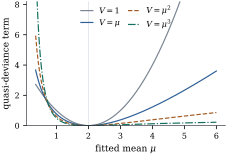

38.2 Quasi-likelihood estimating equations
Estimation here starts from Eq. 38.1.1 and not from a density. There are two useful ways to read it: as the derivative of a function that is not quite a log-likelihood but close enough to carry the usual arguments, and as the best member of a large family of estimating equations. This section develops both, and they meet in the middle.
38.2.1. The quasi-likelihood function
Under Definition 38.1.1,
the quasi-likelihood of a mean
assumed finite, the integral being read as a limit at
an endpoint of
The definition is designed to make one identity true by construction, and everything else follows from it.
Write
(a)
(b)
(c) if
Proof.
(a) Differentiating Eq. 38.2.1 in its upper limit gives the stated
(b)
(c) For an exponential dispersion family the chain rule used in the proof of Theorem 34.3.1 gives
The converse of (c) fails:
which does not involve

import numpy as np
from scipy import integrate
def quasi_deviance_term(y, mu, V):
"""2 * integral from mu to y of (y - t)/V(t) dt: one observation's quasi-deviance."""
value, _ = integrate.quad(lambda t: (y - t) / V(t), mu, y)
return 2 * value
y0 = 2.0
closed_form = {
"V = 1": (lambda m: (y0 - m) ** 2, lambda t: 1.0),
"V = mu": (lambda m: 2 * (y0 * np.log(y0 / m) - (y0 - m)), lambda t: t),
"V = mu^2": (lambda m: 2 * (-np.log(y0 / m) + (y0 - m) / m), lambda t: t ** 2),
"V = mu^3": (lambda m: (y0 - m) ** 2 / (y0 * m ** 2), lambda t: t ** 3),
}
for name, (formula, V) in closed_form.items():
print(f"{name:9s} at mu = 0.8: {quasi_deviance_term(y0, 0.8, V):.6f}"
f" closed form {formula(0.8):.6f}")38.2.2. The quasi-score
Let
(a)
(b) if the mean model is correct then
(c)
(d) if in addition the variance specification Eq. 38.1.2 is correct, then
(e) if instead
which equals
Proof.
(a) By Proposition 38.2.1(a) and the chain rule,
(b) Every term carries the factor
(c) Write
(d) and (e). The summands of
Remark (Existence and uniqueness).
Nothing above guarantees that Eq. 38.1.1 has a
solution, or only one. Under the canonical link of
the variance function,
Kennan’s data record the length in days of
The mean duration is
import numpy as np
import statsmodels.api as sm
data = sm.datasets.strikes.load_pandas().data
y = data["duration"].to_numpy(float) # length of the strike, in days
x = data["iprod"].to_numpy(float) # unanticipated industrial production
X = np.column_stack([np.ones(len(y)), x])
n, p = X.shape
def quasi_irls(X, y, V, steps=60):
"""Solve the quasi-score equations for a log link and variance function V."""
beta = np.zeros(X.shape[1])
beta[0] = np.log(y.mean())
for _ in range(steps):
eta = X @ beta
mu = np.exp(eta)
W = mu ** 2 / V(mu) # working weight (dmu/deta)^2 / V(mu)
z = eta + (y - mu) / mu # working response
beta = np.linalg.solve((X.T * W) @ X, (X.T * W) @ z)
return beta
beta_lin = quasi_irls(X, y, lambda m: m) # V(mu) = mu
beta_scaled = quasi_irls(X, y, lambda m: 7.5 * m) # V(mu) = phi mu: same equations
beta_sq = quasi_irls(X, y, lambda m: m ** 2) # V(mu) = mu^2: different equations
print(f"V = mu {beta_lin}")
print(f"V = 7.5 mu {beta_scaled}")
print(f"V = mu^2 {beta_sq}")38.2.3. Optimality among linear estimating functions
The second view asks what else might have been used.
Any function of the data and the parameter with mean
zero at
Assume Eq. 38.1.2, and
consider linear estimating functions
(a) Every such
(b)
(c) Equality holds if and only if
Proof.
(a) Unbiasedness follows from
(b) and (c). Under Eq. 38.1.2,
Equality in (b) means
Warning. The optimality is
within the class of linear estimating
functions. A known true density would have a score
nonlinear in
38.2.4. Exercises
A. Check your understanding
Compute
Solution. For
Show that the NB2 variance function
B. Practice
Take
Solution. Parameterizing by
Suppose the link satisfies
Solution. Since
C. Going deeper
Take the quasi-binomial specification
Solution.
(a)
(b) For
(c) By Exercise (A1) the exponent is